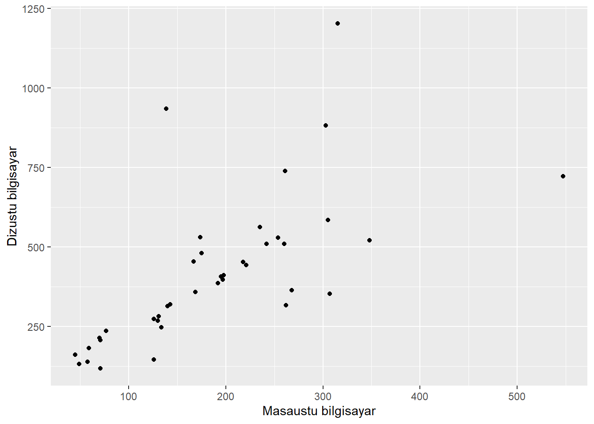
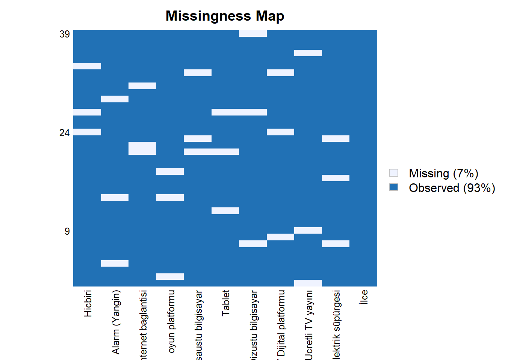
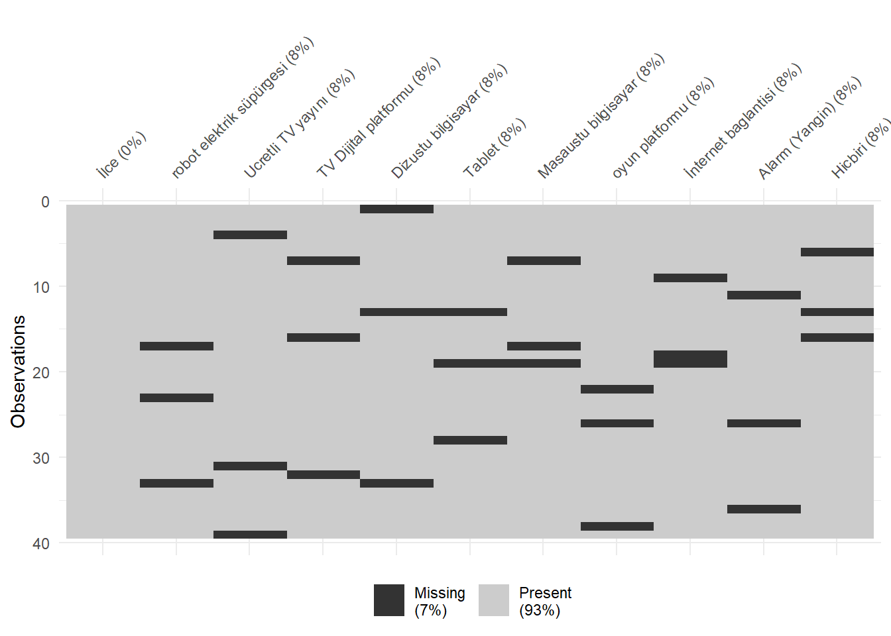
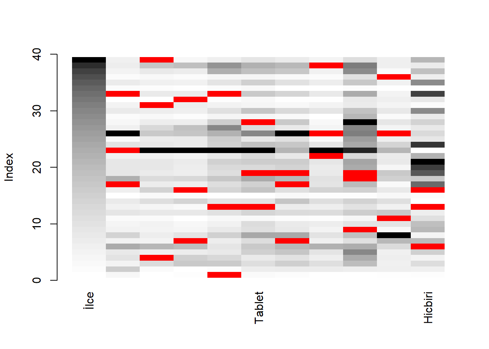
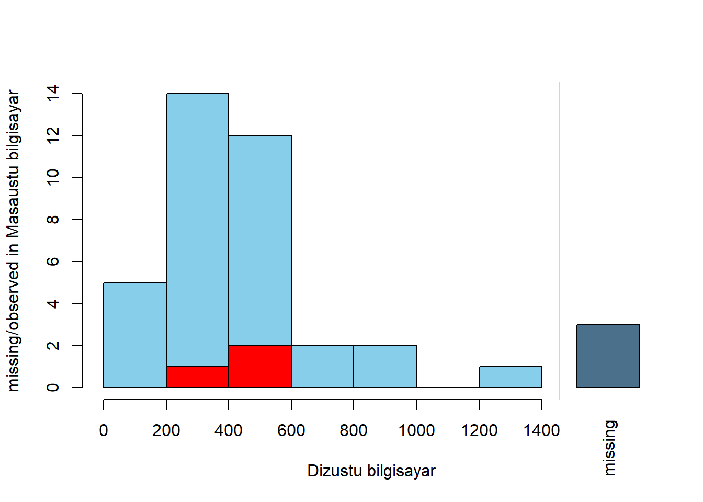

library(readxl)
library(ggplot2)
library(Amelia)
library(naniar)
library(VIM)
library(magrittr)
library(dplyr)R final proje
İlçe Bazında Hanelerdeki Teknolojik Araç Sayıları
veri kaynağı: https://data.ibb.gov.tr/dataset/vdym-ilce-bazinda-hanelerdeki-teknolojik-arac-sayilari
Bu ödev için kullandığım kütüphaneler:
Excel dosyası import
#library(readxl) paketi kullanılmıştır
veri <- read_excel("14-vdym-ilce-baznda-hanelerdeki-teknolojik-arac-saylar.xlsx")
View(veri)dim fonksiyonu ile 39 satır ve 11 sütün olduğu görülüyor.
dim(veri)[1] 39 11summary(veri) fonksiyonunu kullanarak, her bir değişkenin istatistiksel özetini elde ettim. Bu özet, her değişkenin minimum, maksimum, ortalama, medyan ve çeyreklikler gibi temel istatistiksel değerlerini içeriyor.
summary(veri) İlce robot elektrik süpürgesi Ucretli TV yayını
Length:39 Min. : 4.0 Min. : 23.0
Class :character 1st Qu.: 57.0 1st Qu.: 138.5
Mode :character Median : 79.0 Median : 204.0
Mean :110.6 Mean : 251.7
3rd Qu.:119.0 3rd Qu.: 297.5
Max. :566.0 Max. :1199.0
TV Dijital platformu Dizustu bilgisayar Tablet Masaustu bilgisayar
Min. : 26.0 Min. : 117.0 Min. : 49.0 Min. : 45.0
1st Qu.: 129.0 1st Qu.: 257.5 1st Qu.:187.5 1st Qu.:128.0
Median : 212.0 Median : 386.0 Median :268.0 Median :175.0
Mean : 249.2 Mean : 417.4 Mean :292.2 Mean :189.3
3rd Qu.: 320.5 3rd Qu.: 515.0 3rd Qu.:384.0 3rd Qu.:257.0
Max. :1018.0 Max. :1203.0 Max. :803.0 Max. :547.0
oyun platformu İnternet baglantisi Alarm (Yangin) Hicbiri
Min. : 4.00 Min. : 239.0 Min. : 4.0 Min. : 30.0
1st Qu.: 35.00 1st Qu.: 591.0 1st Qu.: 44.5 1st Qu.: 244.0
Median : 52.00 Median : 903.0 Median : 64.0 Median : 447.0
Mean : 64.95 Mean : 892.5 Mean : 93.9 Mean : 580.0
3rd Qu.: 75.00 3rd Qu.:1101.5 3rd Qu.:109.5 3rd Qu.: 805.5
Max. :321.00 Max. :1880.0 Max. :442.0 Max. :1477.0 lm() fonksiyonu ile masaüstü bilgisayari ile dizüstü bilgisayarın arasında ki doğrusal regresyon analizi yaptım ve sonuçlarına göre: Dizustu bilgisayar ile Masaustu bilgisayar arasında bir doğrusal ilişki bulunmaktadır.
lm(`Masaustu bilgisayar` ~ `Dizustu bilgisayar` , data = veri)
Call:
lm(formula = `Masaustu bilgisayar` ~ `Dizustu bilgisayar`, data = veri)
Coefficients:
(Intercept) `Dizustu bilgisayar`
68.1797 0.2901 summary(lm) fonksiyonu ile Dizüstü bilgisaray ile Masaüstü bilgisarayını anlamlılığını F testi ile test edip “anlamlı olduğu söylenebilir” sonucuna vardım.
summary(lm(`Dizustu bilgisayar` ~ `Masaustu bilgisayar` , data = veri))
Call:
lm(formula = `Dizustu bilgisayar` ~ `Masaustu bilgisayar`, data = veri)
Residuals:
Min 1Q Median 3Q Max
-246.12 -64.23 -27.75 1.58 594.78
Coefficients:
Estimate Std. Error t value Pr(>|t|)
(Intercept) 126.8340 60.4199 2.099 0.0427 *
`Masaustu bilgisayar` 1.5351 0.2816 5.451 3.48e-06 ***
---
Signif. codes: 0 '***' 0.001 '**' 0.01 '*' 0.05 '.' 0.1 ' ' 1
Residual standard error: 177.6 on 37 degrees of freedom
Multiple R-squared: 0.4454, Adjusted R-squared: 0.4304
F-statistic: 29.71 on 1 and 37 DF, p-value: 3.478e-06Veri setimizdeki dizüstü bilgisayar ve masaüstü bilgisayar arasında güçlü bir pozitif korelasyon vardır (r=0.6673753).
cor(veri$`Dizustu bilgisayar`, veri$`Masaustu bilgisayar`)[1] 0.6673753Görseldeki verilere göre evlerde hem masaüstü hem dizüstü bilgisaraylarin birlikte bulunma durumunu gösteriyor. ancak bazı evlerde sadece tek türün ağır bastığı da gözlenebilir bu yüzden tam doğrusal ilişki olduğu söylenemez.
#library(ggplot2)
grafikk =ggplot(veri,aes(`Masaustu bilgisayar`,`Dizustu bilgisayar`))
grafikk + geom_point()
any(is.na(veri)) fonksiyonun FALSE vermesi , veri de Boş Gözlem bulunmadğı anlamına geliyor.
any(is.na(veri))[1] FALSEAmelia ,naniar ve VIM paketleri ile birlikte missmap ,vis_miss ve matrixplot fonksiyonlari kullanılarak, veri setinde herhangi bir boş gözlemin olmadığını net bir şekilde görebiliyoruz.
#library(Amelia)
Amelia::missmap(veri)Warning: Unknown or uninitialised column: `arguments`.
Unknown or uninitialised column: `arguments`.Warning: Unknown or uninitialised column: `imputations`.
#library(naniar) paketi kullanılmıştır
vis_miss(veri)
#library(VIM) paketi kullanılmıştır
VIM::matrixplot(veri)veride setinin her sütununa (ilk sütün hariç) verinin yüzde 10 nuna (ilk sütün olmadığı için yüzde 7 sine)denk gelecek şeklide rastgele veriler silindi.
yuzde <- 0.10
for(column in names(veri)[-1]) {
na_count <- floor(yuzde * nrow(veri))
na_indices <- sample(1:nrow(veri), na_count)
veri[na_indices, column] <- NA
}missmap ,vis_miss ve matrixplot fonksiyonlar ile veri setin yüzde 7’sine boş gözlem(NA) değeri atandığını görülebilir.
any(is.na(veri))[1] TRUEAmelia::missmap(veri)Warning: Unknown or uninitialised column: `arguments`.
Unknown or uninitialised column: `arguments`.Warning: Unknown or uninitialised column: `imputations`.
#library(naniar) paketi kullanılmıştır
vis_miss(veri)
VIM::matrixplot(veri)
NA ataması sonrası dizüstü bilgisayar ile masaüstü bilgisayarın karşılaştırma grafiği
#library(VIM) paketi kullanılmıştır
barMiss(veri[,c("Dizustu bilgisayar","Masaustu bilgisayar")])
NA ataması sonrası dizüstü bilgisayar ile masaüstü bilgisayarın Karşılaştırılması:
#library(VIM)
marginplot(veri[,c("Dizustu bilgisayar","Masaustu bilgisayar")])Her sütünün dan Toplam NA değerleri
#library(magrittr) paketi kullanılmıştır
veri %>% is.na() %>% colSums() İlce robot elektrik süpürgesi Ucretli TV yayını
0 3 3
TV Dijital platformu Dizustu bilgisayar Tablet
3 3 3
Masaustu bilgisayar oyun platformu İnternet baglantisi
3 3 3
Alarm (Yangin) Hicbiri
3 3 Ortalama ile NA değelerini doldurma yöntemi ile NA değerleri doldurulmuştur.
#library(dplyr) paketi kullanılmıştır
for(col in names(veri)) {
if(is.numeric(veri[[col]])) {
column_mean <- mean(veri[[col]], na.rm = TRUE)
veri[[col]] <- ifelse(is.na(veri[[col]]), column_mean, veri[[col]])
}
}Son olarak da tekrar Amelia ,naniar ve VIM paketleri ile birlikte missmap ,vis_miss ve matrixplot fonksiyonlari kullanılarak Boş gözlemlerin dolduğunu görebiliyoruz.
any(is.na(veri))[1] FALSEAmelia::missmap(veri)Warning: Unknown or uninitialised column: `arguments`.
Unknown or uninitialised column: `arguments`.Warning: Unknown or uninitialised column: `imputations`.#library(naniar) paketi kullanılmıştır
vis_miss(veri)VIM::matrixplot(veri)